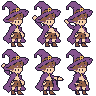

남자 주인공 · 제조/전달6키프레임
같은32×48 원본과 공통3배입니다. 현재 모자·얼굴과 승인된5색을 유지했습니다.
테두리·눈피부·셔츠머리·반바지·부츠모자·망토장식

위: 대기 · 손 뻗기 · 젓기A
아래: 젓기B · 전달 · 손 회수
대기
전체 캐릭터의 지정 팔레트·두 눈·외곽선 검사: 통과. 5명 전체 검사표
제조108조합 · 전달72조합의 손/소품 접점을 검사했습니다.
제조108조합 · 전달72조합의 손/소품 접점을 검사했습니다.
손님들과 같은 배율


반복 재생은 주요 키포즈를 확인하는 기능입니다. 호흡·깜빡임·머리/모자/망토 움직임과 중간 프레임을 합친 행동 애니메이션은 다음 단계입니다.